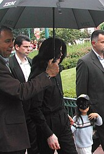
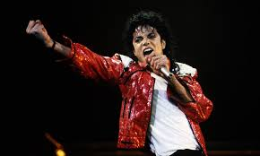

Michael Jackson

Информация
• Полное имя: Майкл Джозеф Джексон
• Дата рождения: 29 августа 1958
• Дата смерти: 25 июня 2009 (50лет)
• Место смерти: Лос-Анджелес, Калифорния, США
• Похоронен: Форес-Лаун
Навигация

Track 1
Artist 1

Майкл Джо́зеф Дже́ксон — американский певец, автор песен, музыкальный продюсер, аранжировщик, танцор, хореограф, актёр, сценарист, филантроп и предприниматель. Один из самых успешных исполнителей в истории поп-музыки, известен как «Король поп-музыки», обладатель 15 премий «Грэмми» и сотен других премий. Количество проданных в мире записей Джексона (альбомов, синглов, сборников и т. д.) составляет 1 миллиард копий. Майкл Джексон внёс значительный вклад в развитие популярной музыки, видеоклипов, танца и моды
Жизнь и карьера
Майкл Джексон родился 29 августа 1958 года в городке Гэри, штат Индиана, он стал седьмым из девяти детей в семье музыкального менеджера Джозефа Джексона (1928—2018) и писательницы Кэтрин Джексон .
Майкл рос с тремя сёстрами и пятью братьями. Одна из сестёр — певица Джанет Джексон (род. 1966). Отец работал крановщиком на сталелитейном заводе, вся семья жила в небольшом домике. В свободное от работы время Джозеф выступал на небольших местных площадках со своей группой Falcons, играл на электрогитаре. Семья жила в музыкальной атмосфере, Кэтрин вспоминала, как пела со своими детьми такие песни как «Cotton Fields», «She Would Coming ‘Round the Mountain» и «Wabash Cannonball». Члены семьи Джексон были приверженцами религии Свидетелей Иеговы. Кэтрин стала посещать их церковь и приняла крещение в 1960 году, когда Майклу было 2 года. Джексоны очень серьёзно относились
к религиозным традициям, изучали Библию, посещали встречи Свидетелей, не отмечали Рождество и дни рождения. Несмотря на это, Майкл был единственным в семье,
кто принял крещение вслед за матерью. В 60-х гг. Джозеф стал задумываться о том, чтобы создать коллектив, состоящий из его старших сыновей. Первоначально в  группу The Jackson Brothers вошли Джеки, Джермейн и Тито. Майкл был ещё слишком маленьким и лишь со стороны наблюдал за тем, как репетируют старшие братья. В 1963 году он начал обучение в начальной школе Гарнетта в Гэри и выступил на одном из школьных праздников с песней «Climb Ev'ry Mountain»[англ.], тогда, заметив в нём талант, Кэтрин убедила Джозефа включить пятилетнего мальчика в состав. К коллективу тогда же присоединился и Марлон, и группа из пяти братьев
с ч мчякавмбыла переименована в The Jackson 5. Отец воспитывал детей, поддерживая жёсткую дисциплину, и применял силу в случаях, когда его что-то не устраивало. Джексон рос, проводя много времени в студии, на репетициях и на сцене, почти не имея возможности выйти на улицу и поиграть с другими детьми в парке. Несмотря на грубые и деспотичные методы воспитания Джозефа Майкл всегда благодарил отца за то, что тот заложил в него решимость, научил выступать перед публикой и приучил к строгой дисциплине, что сыграло большую роль в будущем успехе Джексона.
группу The Jackson Brothers вошли Джеки, Джермейн и Тито. Майкл был ещё слишком маленьким и лишь со стороны наблюдал за тем, как репетируют старшие братья. В 1963 году он начал обучение в начальной школе Гарнетта в Гэри и выступил на одном из школьных праздников с песней «Climb Ev'ry Mountain»[англ.], тогда, заметив в нём талант, Кэтрин убедила Джозефа включить пятилетнего мальчика в состав. К коллективу тогда же присоединился и Марлон, и группа из пяти братьев
с ч мчякавмбыла переименована в The Jackson 5. Отец воспитывал детей, поддерживая жёсткую дисциплину, и применял силу в случаях, когда его что-то не устраивало. Джексон рос, проводя много времени в студии, на репетициях и на сцене, почти не имея возможности выйти на улицу и поиграть с другими детьми в парке. Несмотря на грубые и деспотичные методы воспитания Джозефа Майкл всегда благодарил отца за то, что тот заложил в него решимость, научил выступать перед публикой и приучил к строгой дисциплине, что сыграло большую роль в будущем успехе Джексона.
Сначала братья выступали в местных клубах, на лейбле Гэри Steeltown Records[англ.] был выпущен их первый сингл, затем коллектив показал себя на местных шоу талантов. Масштабы стали расти, и вскоре The Jackson 5 получили возможность выступать на разогреве у таких артистов как Джеймс Браун, Sam & Dave и Глэдис Найт. Стоя за кулисами, Майкл набирался сценического опыта: «Я осторожно наблюдал за звёздами, потому что хотел научиться у них всему, чему только мог. Глазел на их ноги, смотрел, как они держат руки и как хватают микрофон, пытаясь понять, зачем и почему они делают это именно так». Глэдис Найт познакомила Джексонов с основателем Motown Records Берри Горди, и группа была приглашена на прослушивание. Горди был впечатлён перфомансом братьев, особенно самого младшего участника коллектива, Майкла Джексона, и вскоре был подписан контракт The Jackson 5 с звукозаписывающим лейблом, при этом Джозеф продолжал оставаться менеджером своих сыновей. Маленького Майкла музыканты и продюсеры Motown называли «взрослым в теле ребёнка», отмечая его недетский профессионализм на сцене и в студии. С ростом популярности Джексонам было всё сложнее посещать занятия в школе, преподаватели стали обучать их на дому. С 1969 по 1970 гг. The Jackson 5 выпустили на лейбле три альбома, это: Diana Ross Presents the Jackson 5, ABC и Third Album. Композиции «I Want You Back», «ABC», «The Love You Save» и «I’ll Be There», ставшие синглами из этих пластинок, возглавили американские чарты Billboard Hot 100 и Hot Black Singles. «Не знаю ни одного коллектива до или после The Jackson 5, чьи дебютные четыре сингла добились бы такого успеха», — отметил Берри Горди, вспоминая эти события. Группа становилась всё успешнее, но Майкл привлекал к себе наибольшее внимание своим пением и хореографией. Как только коллектив получил признание, семья переехала из Индианы в Лос-Анджелес, где сначала жила в доме Горди и апартаментах Дайаны Росс. В 1971 году Джексоны приобрели поместье Хейвенхёрст в Энсино и переселились туда.
1972—1981: Начало сольной карьеры, Off the Wall
В январе 1972 года тринадцатилетний Майкл Джексон выпустил свой первый альбом под названием Got to Be There. Певец стал первым исполнителем на лейбле Motown, начавшим сольную карьеру, не покидая группу. В том же году состоялся релиз второй пластинки Майкла — Ben, титульный трек альбома стал саундтреком к одноимённому фильму, песня получила «Золотой глобус». В 1973 году Джексон исполнил эту композицию на 45-й церемонии вручения премии Оскар: «Ben» была номинирована на статуэтку американской кино-академии как «Лучшая песня для фильма». Она также стала первым хитом Джексона, достигшим вершины американского чарта Billboard Hot 100. В том же году певец поступил в среднюю школу Монклер в Лос-Анджелесе, и выпустился из неё два года спустя. В период между 1973 и 1977 гг. певец выпустил ещё два сольных альбома: Music & Me в 1973 и Forever, Michael в 1975 году, последняя пластинка не имела большого успеха[36]. Критики отмечали меняющийся с возрастом вокал Джексона и писали о том, что певец уже готов к переменам в музыкальном стиле, однако альбом Forever, Michael демонстрировал всё те же среднетемповые композиции, что и раньше. Отношения The Jackson 5 с Motown Records становились натянутыми. Джексоны хотели иметь возможность записывать и выпускать песни собственного авторства, однако Горди не видел в этом хорошей перспективы, композиции для братьев писала специально созданная в Motown группа авторов и продюсеров под названием «The Corporation». В конце концов, семья Джексонов объявила, что оставляет лейбл и заключает контракт с Epic Records, группа получила новое название — The Jackson. В начале 1978 года Джексон получил роль в нью-йоркском мюзикле «Виз». На съёмках двадцатилетний певец познакомился с продюсером Куинси Джонсом, занимавшимся созданием саундтрека к картине. Джексон попросил у него помощи в поисках человека, который мог бы спродюсировать его следующий сольный альбом, и Джонс предложил свою кандидатуру. Продюсер рассказал в одном из интервью, что сделать это его заставили несколько причин: он видел 12-летнего мальчика, выступавшего на церемонии вручения «Оскар», и уже повзрослевшего певца в актёрской роли. Тогда он заметил возросший потенциал Джексона, как вокалиста. Наконец, работая с музыкантом в студии, Джонс понял, что он сильно вырос в профессиональном плане В декабре 1978 года началась работа над новой сольной пластинкой певца — Off the Wall. Джексон написал для альбома две композиции:  «Don’t Stop ’til You Get Enough» и «Working Day and Night». Список авторов песен также включает в себя Стиви Уандера, Пола Маккартни и Рода Темпертона. Релиз состоялся 10 августа 1979 года на лейбле Epic Records, из пластинки было выпущено 5 синглов: «Don’t Stop ‘til You Get Enough», «Rock With You», «Off the Wall», «She’s Out of My Life» и «Girlfriend», на три из них были сняты видеоклипы. В начале 80-х гг. Off the Wall стал самым продаваемым альбомом чернокожего артиста на тот момент. Пластинка получила высокие оценки от критиков, большинство рецензентов сошлись во мнении, что на ней Джексон показал себя повзрослевшим, зрелым артистом. Композиции в альбоме были выдержаны в жанрах ритм-н-блюза, фанка, соула и диско. За первый сингл из Off the Wall, «Don’t Stop ’til You Get Enough», певец получил первую в своей карьере статуэтку «Грэмми» и две награды «American Music Awards». В конце августа 1979 года Джексону исполнился 21 год, действие контракта между ним и его отцом в качестве менеджера закончилось, и певец получил независимость от Джозефа. Несмотря на это, Майкл продолжал оставаться солистом группы The Jacksons, записывать, продюсировать альбомы коллектива и ездить в концертные турне в их поддержку.
1987—1990: Bad и «Лунная походка»
С середины 80-х гг. Джексон начал работу над песнями для новой пластинки, он записывал свои демоверсии в домашней студии в Энсино с целью получить как можно больший контроль над готовящимся материалом, больше творческой свободы. И без того далёкие от идеала отношения между музыкантом и продюсером натянулись ещё больше, и Bad стал их третьей и последней совместной работой. На подготовку альбома и промо-кампании к нему у музыканта и продюсера ушло 18 месяцев, релиз пластинки несколько раз откладывался. Наконец, в июле 1987 года был выпущен первый сингл — «I Just Can't Stop Loving You» — а 31 августа состоялся релиз альбома. Список композиций пластинки включал в себя песни в жанрах фанка, ритм-н-блюза, госпела, поп- и хард-рока, джаза, свинга и блюза. Отзывы критиков разнились от «очевидной растущей уверенности и самостоятельности певца как продюсера и автора песен» до «полной потери творческой независимости Джексона, задавленной влиянием Куинси Джонса». Пластинка Thriller к тому времени стала своеобразным мерилом творчества музыканта: большинство критиков оценивало последующие альбомы Джексона, сравнивая их именно с ней. Лишь немногие рецензенты замечали, что проводить подобные аналогии некорректно и рассматривать каждую пластинку нужно по отдельности. В апреле 1988 года была издана автобиография Джексона Лунная походка. Книга возглавила списки бестселлеров по версии The New York Times и Los Angeles Times. В 1988 году певец приобрёл себе ранчо в 100 милях к северу от Лос Анджелеса и в мае переехал туда из дома семьи Джексонов в Энсино. Первоначально поместье носило название Платановое ранчо, позднее певец переименовал его в Неверлэнд.
Смерть, церемония прощания и похороны
Майкл Джексон скончался 25 июня 2009 года в результате передозировки лекарственных препаратов, в частности пропофола. Утром 25 июня 2009 года врач Конрад Мюррей сделал Майклу Джексону инъекцию пропофола и оставил певца одного. Примерно через 2 часа Мюррей вернулся и увидел своего пациента лежащим на кровати с широко открытыми глазами и ртом. Врач попытался реанимировать певца, но попытки не увенчались успехом. В 12:21 по местному тихоокеанскому времени был зарегистрирован звонок на номер 911. Приехавшие через 3 минуты и 17 секунд медики обнаружили уже не дышащего Джексона с остановившимся сердцем и сразу начали проводить сердечно-лёгочную реанимацию. Попытки вернуть Майкла Джексона к жизни продолжались по дороге и в течение часа после приезда в Медицинский центр Калифорнийского университета в 13:14. Эти попытки оказались безуспешными. Смерть была констатирована в 14:26 по местному времени. Новость о его смерти получила огласку в первые же минуты после произошедшего. Власти Лос-Анджелеса начали расследование смерти Майкла Джексона. Коронер Лос-Анджелеса квалифицировал действия врачей как убийство и не исключил судебного процесса над ними. В ноябре 2011 года Конрад Мюррей был признан виновным в непредумышленном убийстве и был приговорён к 4 годам тюрьмы, лишившись лицензии на медицинскую практику. 28 октября 2013 года он был досрочно освобождён за примерное поведение.
Творчество
Джексона также называют «Королём музыкального видео»[217]. Стив Хей из Allmusic наблюдал, как Джексон превратил клип в произведение искусства через сложные сюжетные линии, танцы, спецэффекты и появление знаменитостей в эпизодических ролях, одновременно разрушая расовые барьеры. До «Триллера» Джексон тщетно пытался пробиться на MTV якобы потому, что он афроамериканец. Давление со стороны CBS Records убедило MTV начать показывать «Billie Jean», а затем «Beat It», что привело к длительному партнёрству с Джексоном, а также помогло другим чёрным музыкантам получить признание Сотрудники MTV отрицают расизм в их показах или давление, чтобы они изменили свою позицию. MTV утверждает, что они играли рок-музыку независимо от расы. Популярность его  видео на MTV помогла поставить относительно молодой канал «на карту»; внимание на MTV сместилось в сторону поп и R&B[218][219]. Его представление на «Мотаун: вчера, сегодня, навсегда» изменило рамки живого шоу на сцене; «То, что Джексон исполнял синхронно „Billie Jean“, само по себе не экстраординарно, но факт, что это не изменило впечатление от выступления необычайно, было ли это выступление вживую или синхронно, это не влияет на аудиторию», создавая тем самым эпоху, в которой артисты воссоздают образы музыкального видео на сцене. Такие короткие фильмы, как «Триллер», в основном оставались уникальными для Джексона, в то время как танцу танцевальной группы в «Beat It» неоднократно подражали. Хореография «Триллера» стала частью глобальной поп-культуры, копируясь повсюду, от индийских фильмов до тюрьмы на Филиппинах. Короткометражный клип «Триллер» отмечен увеличением уровня музыкальных клипов и был назван самым успешным музыкальным видео, когда-либо попадавшим в Книгу рекордов Гиннесса. В 19-минутном видео на песню «Bad» — режиссёр Мартин Скорсезе — Джексон начал использовать сексуальные образы и хореографию, не виданную ранее в его работе. Время от времени он захватывал или касался груди, туловища и промежности. Отвечая на вопрос Опры в интервью в 1993 году о том, почему он хватается за промежность, он ответил: «Я думаю, это происходит подсознательно», и объяснил, что это не было запланировано, а было вынуждено музыкой. «Bad» получил смешанный приём от поклонников и критиков, журнал «Time» назвал его «позорным». В фильме также показан Уэсли Снайпс, в будущих клипах Джексона знаменитости будут часто получать эпизодические роли. Для «Smooth Criminal» Джексон экспериментировал с инновационным «антигравитационным наклоном» в своих выступлениях. Этот манёвр требовал специальной обуви, за которую он получил патент США № 5255452. Хотя видео на песню «Leave Me Alone» не было официально выпущено в США, в 1989 году оно было номинирован на три награды Billboard Music Video Awards; в том же году исполнитель получил награду «Золотой Лев» за качество спецэффектов, используемых в его постановках. В 1990 году «Leave Me Alone» выиграл Грэмми как лучшее музыкальное видео, короткая форма.
Награды и достижения
Достижения Джексона — одного из немногих музыкантов, дважды введённых в Зал славы рок-н-ролла (в составе коллектива Jackson 5 и как сольного артиста), — включают в себя ряд рекордов в Книге рекордов Гиннесса, звание «Самого успешного артиста всех времён», 15 премий «Грэмми». Ещё при жизни Майкла Джексона люди, с подачи Элизабет Тейлор, неофициально называли его «Королём поп-музыки», но это звание так сильно прижилось к Джексону, что музыкальное общество признало его таковым официально. Альбом Джексона 1982 года Thriller остаётся самым продаваемым альбомом всех времён, и ещё четыре его сольных студийных альбома входят в число самых продаваемых в мире: Off the Wall (1979), Bad (1987), Dangerous (1991) и HIStory (1995). Джексон популяризировал сложные для исполнения танцевальные техники — такие как «робот» и «лунная походка». Джексон был также награждён «За выдающийся вклад в мировую культуру» за вклад сотен миллионов долларов в 39 поддерживавшихся им благотворительных организаций и его собственный фонд Heal the World. Награждён (посмертно) на «Премии Муз-ТВ 2010» за огромный вклад в мировую музыкальную индустрию. Приз вручён сестре певца Ла Тойе Джексон (LaToya Jackson).
Посмертные альбомы
Sony заключила с семьёй Майкла контракт на выпуск новых десяти альбомов Джексона. Они будут включать в себя переиздания некоторых старых альбомов и сборники никогда не издававшихся песен. Первым из этих альбомов стал Michael, выпущенный уже в 2010 году. От критиков он получил смешанные отзывы, но, по всеобщему признанию, вышел значительно лучше, чем ожидалось. Из альбома было выпущено четыре сингла, на каждый были сняты клипы. Сам Майкл в них задействован на кадрах-вставках из прижизненных клипов. Через год был выпущен ремикс-альбом Immortal, состоявший из ремиксов лучших хитов Майкла. Этот альбом послужил саундтреком для шоу Цирка дю Солей «Michael Jackson: The Immortal World Tour», которое включало в себя номера на основе песен Джексона и его танцев. В создании номеров принимали участие хореографы, ранее работавшие с Майклом при жизни. В мае 2014 года вышел второй посмертный сборник альбом Майкла, Xscape. Этот альбом состоял из 8 песен, причём одна из них, сингл «Love Never Felt So Good», была сделана в двух вариантах: сольный и дуэт с Джастином Тимберлейком (на второй вариант был снят клип). 18 мая 2014 года, на церемонии Billboard, выступило иллюзорное изображение Джексона, созданное с помощью технологии «Призрак Пеппера» (хотя большинство для удобства предпочитают называть его голограммой), «исполнив» песню из альбома «Slave To The Rhythm». Реакция фанатов была смешанной, многие полагают, что на самом деле был использован двойник.